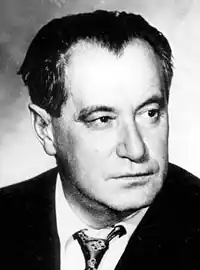
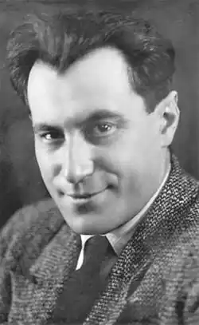

Катаєв Валентин Петрович народився 28 січня (за новим стилем) 1897 року в Одесі в сім'ї вчителя. Перший вірш "Осінь" Катаєв опублікував ще гімназистом у 1910 році в газеті "Одесский вестник". Друкувався також в "Південній думки", "Одеському листку", "Пробудження", "Лукомор'я" і ін. У 1915, що не закінчивши гімназії, пішов добровольцем на фронт, був двічі поранений, отруєний газами. Виступав з кореспонденціями і нарисами про "окопної" життя солдатів, сповненими співчуття до пересічній людині на війні.
У 1919 Катаєв був мобілізований до Червоної Армії, командував артилерійською батареєю на Донському фронті. Повернувшись до Одеси, працював в ЮгРОСТА, відвідував різні літературні гуртки і об'єднання. Зблизився з Ю.К.Олешей, Е.Г.Багріцкім, разом з якими складав агітаційні тексти для плакатів.
З 1922 жив в Москві, був постійним співробітником газети "Гудок" (з 1923), друкував гуморески і фейлетони в "Правді", "Робітничій газеті", "Праці" (псевдоніми: Старий Саббакін, Ол.Твіст, Митрофан Гірчиця). У ранній творчості Катаєва своєрідний сплав реалізму, гострої життєвої спостережливості, іронії, яка доходить до сарказму, романтичної піднесеності і зухвалої фантазійного проявився в оповіданнях про Громадянську війну ( "Досвід Кранца", 1919; "Золоте перо", 1920; "Записки про Громадянську війну" , 1924, де в наявності тенденційно-контрастне "чорно-біле" зображення того, що відбувається, з піднесеним описом "червоних" героїв і сатиричної прорисовкой білогвардійців). У цей період були написані авантюрно-утопічні романи про світову революцію ( "Острів Ерендорф", "Повелитель заліза", обидва 1924). Катаєв був захоплений експериментами в області форми, в його прозі з'явилися дивні персонажі — загадковий оксфордський студент сер Генрі, рис в темному піджаку і білих манжетах і інші фігури, які змушують згадати про Е. Т. А. Гофмана та Е. По ( "Сер Генрі і чорт ", 1920;" Залізне кільце ", 1923). Паралельно Катаєв йшов від глузливого обігравання анекдотичних випадків (збірки оповідань "Бородатий крихітка", 1924; "Найсмішніше", 1927) до викривального пафосу розвінчання культу наживи і "красивого" життя. Перший значний успіх принесла письменникові повість "Розтратники" (1926). Це фантасмагорична історія бухгалтера Прохорова і касира Ванечки, які, смітячи казенними грошима, колесять по Росії в пошуках красивого життя. Дія відбувається в період НЕПу, і перед персонажами постає безрадісна картина убогого радянського побуту і нахабного непманства. Повість була переведена за кордоном, стала бестселером в США. Гостротою соціальної та психологічної сатири, спрямованої проти обивательської вульгарності і міщанського культу власності, відзначена комедія "Квадратура кола" (1928). Після поїздки в Магнітогорськ Катаєв написав роман-хроніку "Час, вперед!" (1932), назва якого підказав йому В. Маяковський. Книга пройнята вірою Маяковського в те, що початок першої п'ятирічки може бути сприйнято як зоря нової ери. Головні герої роману — інженер Маргуліес, Загіра, бригадир бетонників Саєнко — бачать сенс свого життя в праці, випереджаючому час і змінює життя. У повісті "Біліє парус одинокий" (1936), головними героями якої стали одеські хлопчаки, які виявляються у вирі революційних подій 1905. Захоплюючий сюжет, мальовнича предметність опису "фону" того, що відбувається — суєти одеських вулиць, ринку, порту, пляжу, неугавній моря, гімназійної життя і т.д., сплав гумору, ліризму і героїчної патетики зробили цей твір однією з улюблених дитячих книг. Прагненням показати історію країни через долю людини відзначена і повість Катаєва "Я, син трудового народу" (1937), дія якої відбувається під час німецької окупації України в 1919, головними героями виступають фольклорні персонажі — бравий солдат Семен Котко і дівчина-краса Софія, розповідь , що розгортається в стилістиці народних оповідей, насичене описами українських пейзажів, обрядів і звичаїв, звуками української мови. Катаєв про Велику Вітчизняну війну У роки Великої Вітчизняної війни військовий кореспондент Катаєв писав фейлетони, нариси, оповідання. Величезну популярність принесла письменникові повість "Син полку" (1945; Державна премія, 1946), розповідь про долю хлопчика-сироти, усиновленого бойовим полком. Інститут "синів полку" з тих пір утвердився у вітчизняній армії; за повістю була написана однойменна п'єса, знятий фільм (1946 реж. В.М.Пронін). Точним відчуттям сучасності, достовірністю деталей, дотепним сюжетом, сплавом ліризму і гротеску, як і інші його драматургічні твори, відрізнялася п'єса "День відпочинку" (1947). У 1957-1962, будучи головним редактором журналу "Юність", Катаєв сприяв його перетворенню в одне з провідних періодичних видань країни, "рупор" т.зв. шістдесятників, який відкрив шлях до читача багатьом видатним літераторам (в т.ч. В.П.Аксенову і А.Т.Гладіліну). У 1964 письменник опублікував художньо-публіцистичну повість про В. І. Леніна "Маленькі залізні двері в стіні". У циклі мемуарних творів Катаєва (повісті "Святий колодязь", 1965; "Трава забуття", 1967; "Розбите життя, або Чарівний ріг Оберона", 1972; "Алмазний мій вінець", 1975; "Сухий Лиман", 1986, де, одухотворені поетичною фантазією автора, зійшлися герої і сюжети багатьох книг Катаєва), відкрилися нові грані таланту письменника: глибина проникнення в сенс подій і характери людей, сповідальність і спостережливість, з'єднані з живою здатністю до художнього зміщення часу і простору. У повісті "Уже написаний Вертер" (1979) Катаєв показує Громадянську війну в Росії як безглузду братовбивчу бойню, до якої залучений герой повісті, щирий і чистий юнкер Діма, і в якій вершать свій кривавий суд комісари в чорних шкірянках, що розстрілюють без суду і слідства свої жертви в гаражах. У "Юнацькому романі" (1982) Катаєв розповів історію, схожу на старовинний романс: про любов молодого солдата Пчелкина до генеральської дочки. Це роман в листах, будівельним матеріалом якого стали архівні знахідки. Останні роки життя Катаєва Остання книга Катаєва "Сухий Лиман" (1986) майже не була помічена критикою. Це свого роду епілог його багатотомного роману: в останній раз зійшлися разом герої, об'єдналися сюжети багатьох книг. Життя пропущена крізь призму далеких спогадів в з'єднанні з поетичною фантазією. Помер Катаєв в місті Москві 12 квітня 1986.